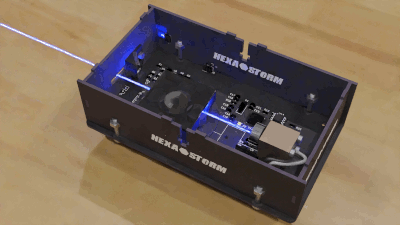
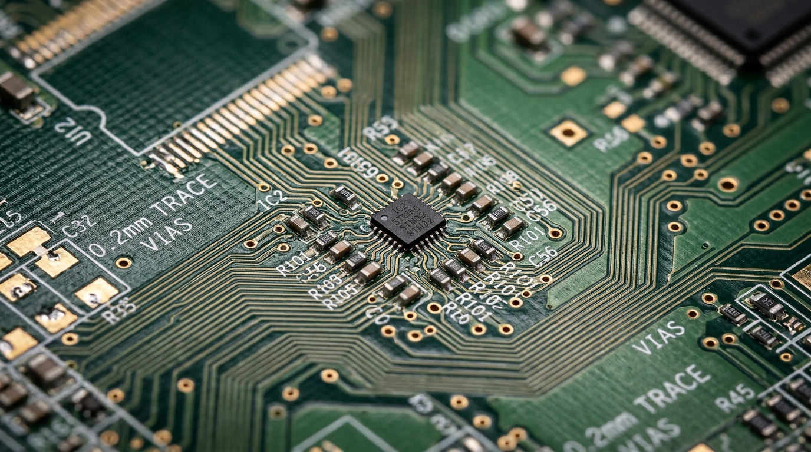
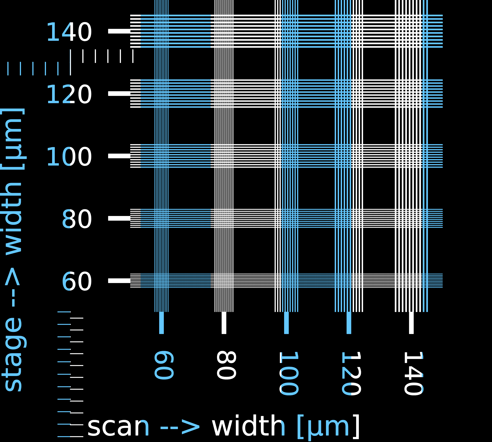
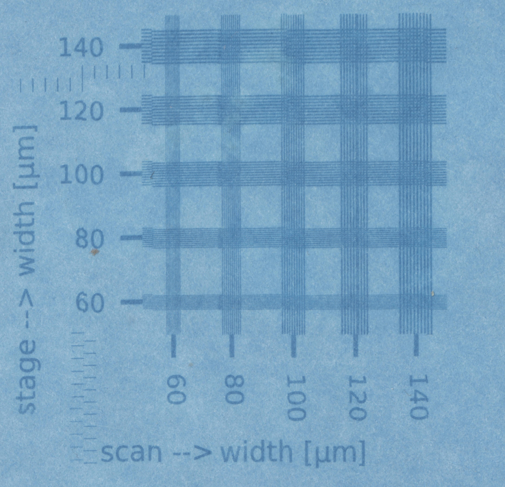

Sub-60 µm Resolution Up to 34 m/s Scan Speed CNC 3018 Pro Drop-In Upgrade Open-Hardware Gateware & Optics


Every modern electronic device—from sensors to power electronics—relies on a Printed Circuit Board (PCB): a laminate board patterned with microscopic copper traces connecting chips and discrete components together.
While commercial fab houses (such as PCBWay) are the standard for volume multi-layer manufacturing, Hexastorm brings industrial Laser Direct Imaging (LDI) to your desktop—eliminating the bottlenecks of rapid prototyping, broken CNC milling bits, and expensive engineering downtime.
When validating a new RF trace, impedance-matched differential pair, or new IC footprint, you don't need a full production board. You need a simple test coupon right now. Hexastorm patterns custom test tracks in minutes rather than burning an entire week.
R&D hardware and optical engineers cost €120+ per hour. Waiting 5–7 days for an overseas shipment just to validate a minor track hypothesis stalls project velocity and burns thousands in engineering overhead. Same-afternoon iteration keeps development momentum alive.
Commercial PCB fabs only accept standard, rigid FR4 panels with predefined copper weights. Hexastorm enables direct digital exposure onto materials commercial fabs reject or charge prohibitive tooling fees for: flexible polyimide (flex circuits), ultra-thick copper busbars, RF ceramics / PTFE, and non-planar or curved substrates.
Desktop mechanical isolation milling with 0.1 mm V-bits frequently snaps tools, leaves ragged copper burrs, and cannot reliably machine modern fine-pitch surface-mount IC pads. Hexastorm's focused 405 nm laser spot writes sub-60 micron features with zero tool wear and zero mechanical force.
Industrial LDI machines cost upwards of €50,000 to €200,000. Hexastorm packages high-speed rotating prism optics into an accessible drop-in light engine for commodity desktop frames. Once your bench setup is in place, routine in-house test exposures avoid rush fees, minimum order quantities, or proprietary consumable markups.
Hexastorm is an open-hardware laser scanning engine engineered for rapid, high-resolution raster exposure in printed circuit board photolithography and photopolymer additive manufacturing.
By replacing slow Cartesian gantries and delicate galvanometer mirrors with a balanced, high-RPM rotating refractive prism, Hexastorm achieves scanning velocities up to 34 meters per second while maintaining flat-field linearity and sub-micron repeatability.
< 60 µm Demonstrated Resolution
Up to 34 m/s Linear Scan Speed
405 nm / 500 mW UV Laser Engine
< 1.0 µm Repeatability Jitter
| Parameter | Specification | Notes / Performance Context |
|---|---|---|
| Optical Wavelength | 405 nm | Single-mode laser diode for UV photoresist & photopolymer resins |
| Optical Power | 500 mW | Modulated via high-speed driver up to 12 MHz |
| Rotational Speed | 3,000 – 21,000 RPM | Driven by custom planar PCB / brushless motor with closed-loop sync |
| Linear Scan Speed | Up to 34 m/s | At 21,000 RPM across substrate plane (3,000 RPM practical baseline) |
| Demonstrated Resolution | < 60 µm | Single-facet exposure tests on UV solar photo paper |
| Optical Spot Size (FWHM) | ~25 – 40 µm | Circularized focal spot at target plane |
| Repeatability (Jitter) | < 1.0 µm std dev | Sub-micron orthogonal and in-scan positional stability |
| Control Architecture | Lattice iCE40UP5K + ESP32-S3 | FPGA microsecond raster gateware + Wi-Fi / motion control |
| Hardware Target | CNC 3018 Pro Drop-In | Unified 4-layer control board replacing stock 3018 electronics |
The imaging capabilities of the rotating prism engine have been characterized by translating digital lane slices directly into physical raster exposures on photosensitive substrates.

Software Toolchain: Multi-lane slice preview generated by Hexastorm, dividing vector artwork into parallel high-speed raster scan lanes with registration markers.

Physical Exposure: Single-facet raster exposure test on UV solar photo paper, resolving crisp sub-60 micron features. (Note: Small stitching variations visible across lane boundaries stem from Cartesian CNC stage backlash and mechanical lead-screw tolerances—not the light engine itself, which consistently delivers cycle-accurate spot placement and sharp optical focus across every sweep).
By developing custom Amaranth HDL gateware (photodiode_debounce.py), electrical noise and optical ringing on the sync photodiode are completely eliminated. This provides cycle-accurate, sub-microsecond timing baselines on every revolution.
During bench calibration with a stationary global shutter sensor (OV2311), custom OpenCV algorithms quantify orthogonal tilt and in-scan timing jitter across 10 consecutive sweeps per facet, delivering sub-micron standard deviations (0.25–0.8 µm orthogonal, 0.47–1.0 µm in-scan).
To eliminate the barrier of custom mechanical chassis, the 2026 electronics are integrated into a single 4-layer PCB (Firestarter). It drops directly into the standard enclosure of the widely available CNC 3018 Pro desktop machine, retaining its power supply, frame, and cabling.
From KiCad SVG vector imports and FPGA gateware to Python optical simulation in pyoptools and opticaldesign, every layer of the hardware and software stack is fully documented and open.
The unified 4-layer Firestarter control board (combining the ESP32-S3, Lattice iCE40UP5K FPGA, TMC2209 silent stepper drivers, and 24V power tree onto an 88 × 70 mm footprint) was manufactured and sponsored by PCBWay.